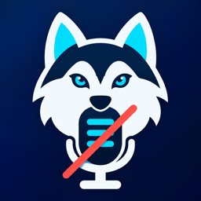

Husky HushYour voice stays yours.
Husky Hush does not record, listen to, collect, or transmit microphone audio.
The app uses macOS Core Audio device controls to mute supported microphone inputs or set their input volume to zero. It never opens an audio recording stream.
Information stored on your Mac
Husky Hush saves microphone device identifiers and previous mute or input-volume values locally in the app’s settings. These values let it restore the settings when you explicitly turn microphones on. They are not sent to the developer or any third party. No names, email addresses, location, browsing history, or audio are collected by the app.
Network connections and third parties
Husky Hush has no app network connections, tracking, advertising, or analytics services. Opening a support or privacy link launches your web browser. These pages are hosted by GitHub Pages; GitHub may process connection information under its privacy statement. If you choose to submit a GitHub support issue, the information you post is handled by GitHub and may be public.
What muting means
Husky Hush changes supported device input controls; it does not revoke app microphone permissions. Unsupported microphones remain usable by other apps. Hardware or software changes may briefly pass audio between checks. The app displays an explicit warning when it cannot control or verify a microphone.
Keeping or removing local settings
Quitting deliberately leaves current input controls unchanged. Use “Turn microphones on” before quitting to restore the saved settings. You may also adjust input settings in macOS. Local app preferences can be removed with the app’s sandbox data after uninstalling; nothing needs to be deleted from a server because the app stores no server-side data.
Questions or changes
Developer: Mike West. For privacy questions, open a privacy support issue. Avoid posting private audio or personal information in a public issue. Updates to this policy will be published here with a revised effective date.